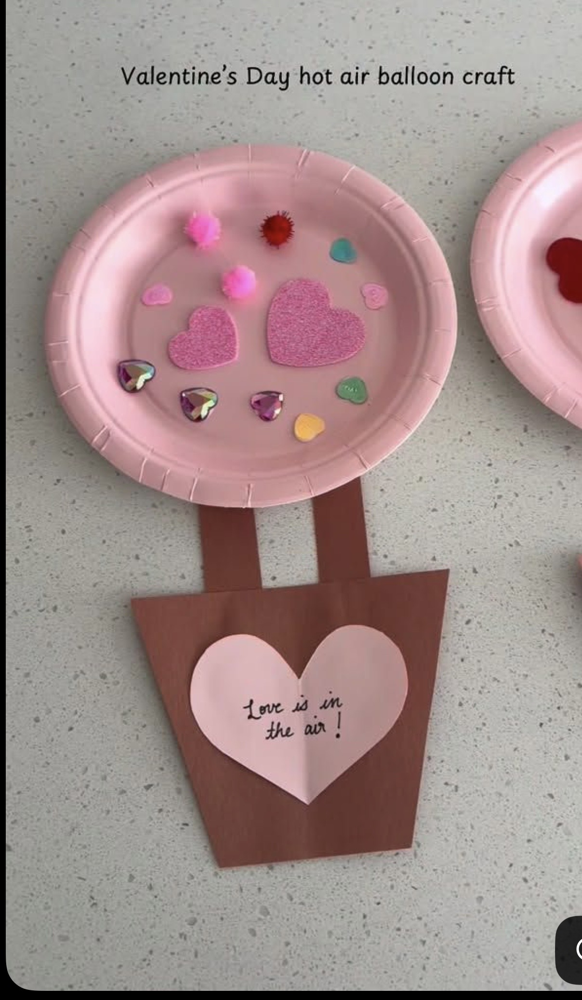
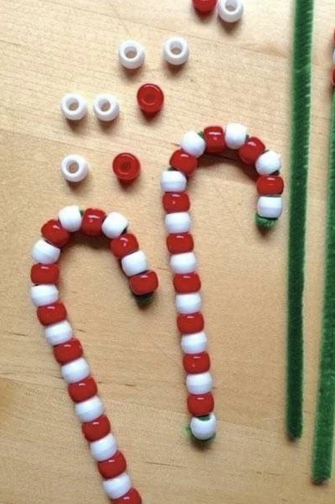
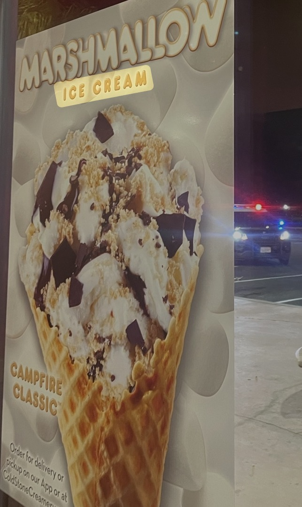
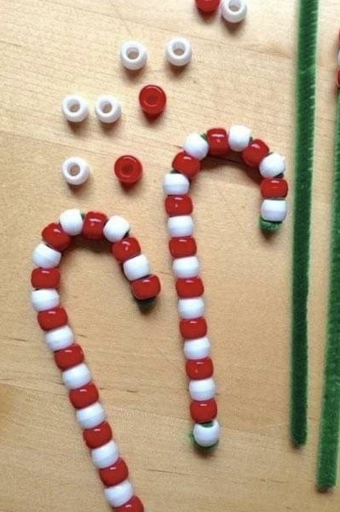
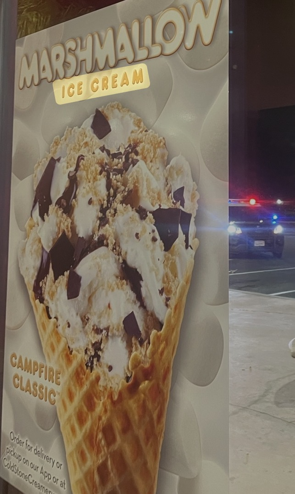

Tadj Edwards
Hi, my name is Tadj Edwards. I’m currently a 3rd year psychology student attending UCR. I would ultimately like to pursue a career in nursing working in the labor and delivery or Pediatric oncology unit. While working as a full time student I have maintained a 3.0 GPA that is continuously increasing as I have maintained straight A’s over the past few quarters. I have also maintained a part time job while being in school as a teacher in a program teaching 1st and 2nd grade students. This has led me to gain experience working with children in large groups as I teach around 28 students. This experience has taught me many skills that I believe will help me be successful in the pediatric field of nursing. While being on this job I have gained extra experience that is related to the nursing field as I was trained in first aid. I also was trained in CPR and choking hazards.
While I was in high school I was enrolled in a medical assisting program where I took a medical terminology class where I learned many important medical terms that are often used in the health field. I also learned how to take blood pressure which is a necessity in the nursing field. The medical assisting program was split into two concepts to be taken over two years, the first one being back office work and the second being from office. While working in the back office I learned important skills such as heat exhaustion training, stroke symptoms and medical interventions. I learned how to treat medical emergencies while waiting for EMS. This includes skills like anaphylactic shock treatments and wound treatments. These skills helped me see the importance of medical treatment in emergencies and helped me gain skills that can be useful during clinicals and my career as a nurse. While learning back office work I learned about HIPPA rules and how to schedule appointments and write emails
Aside from my background in the medical field I have been pursuing a degree in psychology. I originally wanted to pursue med school but I felt nursing was more my passion as I truly value patient care. I believe my degree in psychology helps give me a better understanding of people in general and insight on the other side of health aside from the physical. I feel this background provides a strength as I'm able to give care to people with regard for their physical and mental health. While treating patients I would want to make a safe place for them to share concerns for what is bothering them. I also think it will help especially in the labor and delivery unit as this medical or process takes a toll on new mothers mentally and I feel as though I can be a valuable resource. Overall I would hope to be hired for an internship. so i can gain even more experience and work in a hospital to gain more field experience. I think this experience would benefit me greatly on my application to an ABSN program to pursue a career in the health industry and doing my part to save lives.
Experience
Teacher
• Created personalized Curriculum
• taught in a classroom of 27 Students
• Experience with first aid and behavioral challenges
Shift Lead
• Help assist with shipments
• Opened the store and prepped
• Making and decorating cakes
• Assisting with customers and employees
Education
Cajon High School
University of California Riverside
Portfolio




 